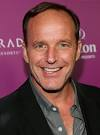

MIS ACTORES FAVORITOS
Robert Downey Jr.

- Pais: EEUU
- Edad: 47 años
- es.wikipedia.org/wiki/Robert_Downey_Jr.
- Peliculas
- Iron Man
- Los vengadores
- Sherlock Holmes
Jaime Lorente
- Pais: España
- Edad: 31 años
- es.wikipedia.org/wiki/Jaime_Lorente
- Peliculas
- La casa de papel
- La sombra de la ley
- Bedspread
Tobey Maguire
- Pais: EEUU
- Edad: 47 años
- es.wikipedia.org/wiki/Tobey_Maguire
- Peliculas
- La jugada maestra
- SpiderMan
- Brothers
Clark Gregg
- Pais: EEUU
- Edad: 60 años
- es.wikipedia.org/wiki/Clark_Gregg
- Peliculas
- Agents of SHIELD
- Trust me
- Asfixia
Santiago Segura
- Pais: España
- Edad: 57 años
- es.wikipedia.org/wiki/Santiago_Segura
- Peliculas
- Torrente
- Padre no hay mas que uno
- El dia de la bestia
Chris Evans
- Pais: EEUU
- Edad: 41 años
- es.wikipedia.org/wiki/Chris_Evans
- Peliculas
- Capitán America
- Los 4 fantasticos
- The Gray Man